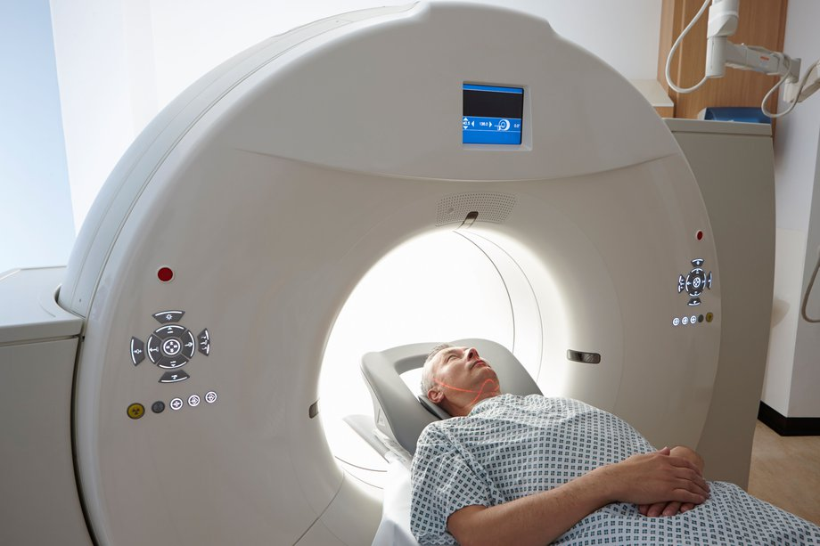
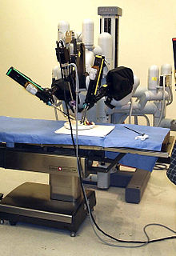
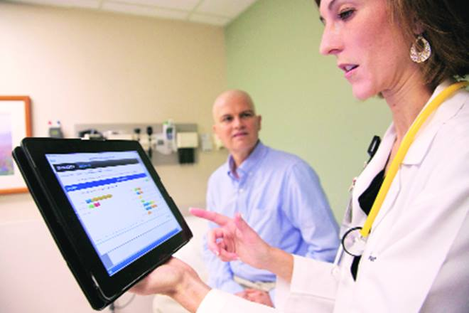

Computers are becoming a big part of our lives.They are not only used in our everyday activities but, also they help
physicians and medical researchers to discover, test and apply medical techniques in every hospital in the world.
Furthermore, medical ideas and new medical breakthroughs can be shared with other medical professionals from all around the world,
thanks to computer technology.
X-rays and CT scanning
Surgery
Diagnostis Databases
Medical Research
X-rays and CT scannning
X-rays and CT scans are used to search for abnrmalities as they can produce images of a patient's internal structure.
CT are special X-ray tests produce cross-sectional images of the body using X-rays and a computer.
CT scanners have vastly improved patient comfort because a scan can be done quickly.
Improvements have led to higher-resolution images, which assist the doctor in making a diagnosis.
For example, the CT scan can help doctors to visualize small nodules or tumors, which they cannot see with a plain film X-ray.

Surgery
Robotics allow doctors to perform surgery on patients without even being in the same room.
Video networking and real-time vital statistics monitoring allow for safe,
precise surgeries that are observed by on-staff doctors or students. This promises to allow the
expertise of specialized surgeons to be available to patients worldwide, without the need for patients to travel
beyond their local hospital.

Diagnostis Databases
Computer databases allow doctors to store data and updates about their patients. In that way they can easily search for
information and track the prograss of patients more easily. Moreover this allows medical information from previous cases and peer-reviewed journals
to be instantly available to medical professionals at any time and place.

Medical Research
Currently, many computing platforms are used to run medical simulations in search of cures to diseases such as cancer, AIDS, and Alzheimer's
disease. This allows millions of interconnected computers to work together, that inceases the speed at which potential cures
may be found.